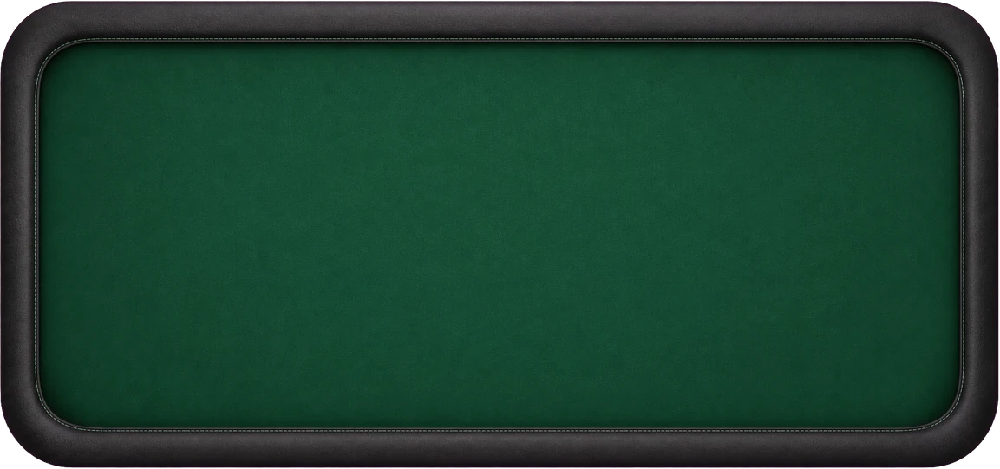

preparo il tavolo…
come si gioca
- roulette europea: trentasette numeri, un solo zero. la ruota gira davvero e la pallina si ferma dove la portano la pista, i deflettori e i separatori: non c'è un'estrazione a parte.
- scegli una fiche sul bordo del tavolo e tocca il tappeto: un numero, una linea fra due numeri (cavallo), l'incrocio di quattro (carré), il bordo di una fila (terzina) o di due (sestina), le dozzine, le colonne, rosso o nero, pari o dispari, 1-18 o 19-36.
- «gira» chiude le puntate: il croupier dà la spinta al rotore, lancia la pallina e, quando si ferma, mette il dolly sul numero, ritira le fiche perse e ti spinge le vincite.
- si punta da 5 a 500 $pzk per casella. lo zero fa perdere tutte le puntate esterne.
- da tastiera: barra spaziatrice per girare, 1–5 per scegliere la fiche, backspace per togliere l'ultima fiche.
quanto paga
| numero pieno | 35 a 1 |
| cavallo (due numeri) | 17 a 1 |
| terzina, o zero con due numeri | 11 a 1 |
| carré, o zero con 1 2 3 | 8 a 1 |
| sestina | 5 a 1 |
| dozzina, colonna | 2 a 1 |
| rosso, nero, pari, dispari, 1-18, 19-36 | 1 a 1 |
gli ultimi giri
solo per maggiorenni. nessun denaro reale: i $pzk sono gettoni senza alcun valore, non si comprano e non si incassano. qui si gioca da soli, con mille $pzk per cominciare; quando finiscono, il tavolo te ne ridà mille.